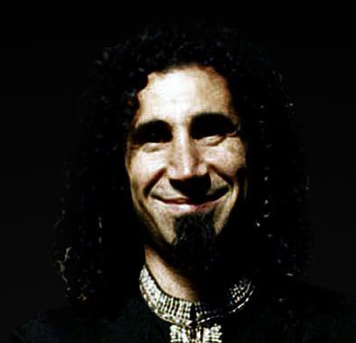

De padres armenios, nace en Beirut, el 21 de agosto de 1967. Sus cuatro abuelos fueron supervivientes del genocidio armenio. A los 7 años de edad, se trasladó con sus padres a Los Ángeles, California, debido a la Guerra Civil Libanesa de 1975. En su juventud, asistió a un colegio armenio llamado Rose and Alex Pilibos Armenian School, en Los Ángeles, a donde también asistieron dos de los futuros miembros de System of a Down, Daron Malakian y Shavo Odadjian.